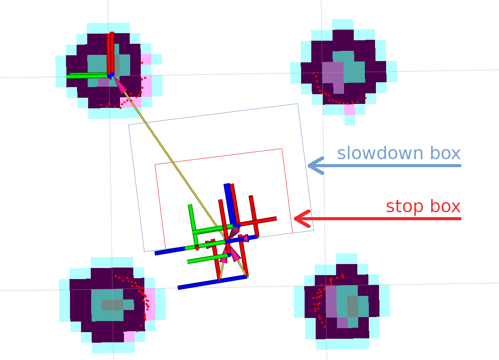
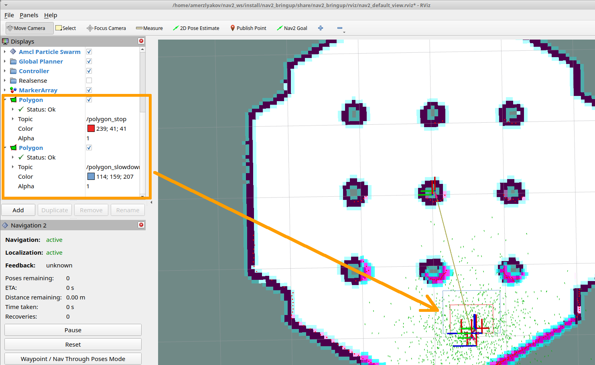
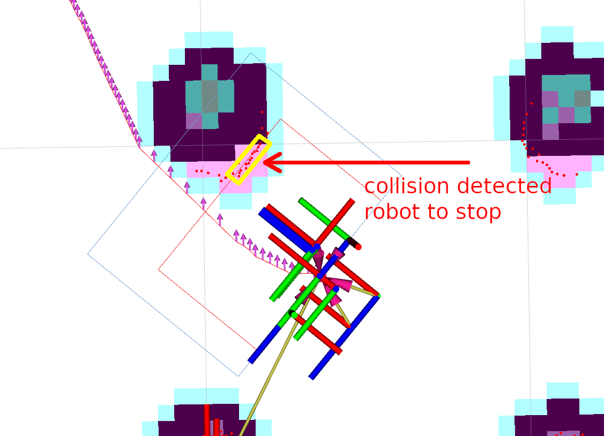

使用碰撞监视器

概述
本教程展示了如何在Nav2堆栈中使用碰撞监视器。基于本教程，您可以为您的环境和需求进行设置。
配置碰撞监视器
碰撞监视器节点具有自己的``collision_monitor_node.launch.py``启动文件和``collision_monitor_params.yaml``文件中的预设参数，用于演示，但如果在实际应用中使用，将其添加到Nav2的主启动文件中非常简单。在演示中，将创建两个形状-一个内部停止框和一个较大的减速框，放置在机器人的前方：
{kind=link}
如果在减速区域内出现超过3个点，机器人将将其速度降低到其值的``30%``。对于障碍物与机器人危险接近的情况，将启用内部停止区域。为了进行此设置，应将以下行添加到``collision_monitor_params.yaml``参数文件中。停止区域被命名为``PolygonStop``，减速包围盒被命名为``PolygonSlow``：
polygons: ["PolygonStop", "PolygonSlow"]
PolygonStop:
type: "polygon"
points: [0.4, 0.3, 0.4, -0.3, 0.0, -0.3, 0.0, 0.3]
action_type: "stop"
min_points: 4 # max_points: 3 for Humble
visualize: True
polygon_pub_topic: "polygon_stop"
PolygonSlow:
type: "polygon"
points: [0.6, 0.4, 0.6, -0.4, 0.0, -0.4, 0.0, 0.4]
action_type: "slowdown"
min_points: 4 # max_points: 3 for Humble
slowdown_ratio: 0.3
visualize: True
polygon_pub_topic: "polygon_slowdown"
注解
圆形形状可以替代多边形，例如对于全向机器人的情况，碰撞可能发生在任何方向。然而，对于教程的需要，让我们将视野集中在多边形上。出于同样的原因，我们不讨论Approach模型。可以通过参考:ref:`configuring_collision_monitor`配置指南轻松启用这两种情况。
注解
教程中的两个多边形形状都是静态设置的。然而，可以通过包含多边形或足迹的顶点点的主题消息来动态调整它们的时间。有关更多信息，请参阅配置指南。
对于工作配置，至少应添加一个数据源。在当前演示中，使用激光扫描仪（虽然``PointCloud2``和范围/声纳/红外传感器也是可能的），它由以下行描述了碰撞监视器节点的情况：
observation_sources: ["scan"]
scan:
type: "scan"
topic: "scan"
设置主题名称、帧ID和超时时间，以便与默认的Nav2设置正确配合使用。在这种情况下，整个``nav2_collision_monitor/params/collision_monitor_params.yaml``文件将如下所示：
collision_monitor:
ros__parameters:
use_sim_time: True
base_frame_id: "base_footprint"
odom_frame_id: "odom"
cmd_vel_in_topic: "cmd_vel_raw"
cmd_vel_out_topic: "cmd_vel"
transform_tolerance: 0.5
source_timeout: 5.0
stop_pub_timeout: 2.0
polygons: ["PolygonStop", "PolygonSlow"]
PolygonStop:
type: "polygon"
points: [0.4, 0.3, 0.4, -0.3, 0.0, -0.3, 0.0, 0.3]
action_type: "stop"
min_points: 4 # max_points: 3 for Humble
visualize: True
polygon_pub_topic: "polygon_stop"
PolygonSlow:
type: "polygon"
points: [0.6, 0.4, 0.6, -0.4, 0.0, -0.4, 0.0, 0.4]
action_type: "slowdown"
min_points: 4 # max_points: 3 for Humble
slowdown_ratio: 0.3
visualize: True
polygon_pub_topic: "polygon_slowdown"
observation_sources: ["scan"]
scan:
type: "scan"
topic: "scan"
演示执行
一旦调整了碰撞监视器节点和``cmd_vel``话题的映射，碰撞监视器节点就准备好运行了。为此，请按照:ref:`getting_started`中的说明运行Nav2堆栈：
ros2 launch nav2_bringup tb3_simulation_launch.py headless:=False
在并行控制台中，使用其启动文件启动碰撞监视器节点：
ros2 launch nav2_collision_monitor collision_monitor_node.launch.py
由于``PolygonStop``和``PolygonSlow``多边形将有自己的发布器，可以将它们添加到可视化中，如下图所示：
{kind=link}
设置初始姿态，然后将Nav2目标放在地图上。机器人将开始移动，在靠近障碍物时减速，并在接近障碍物时停止：
{kind=link}